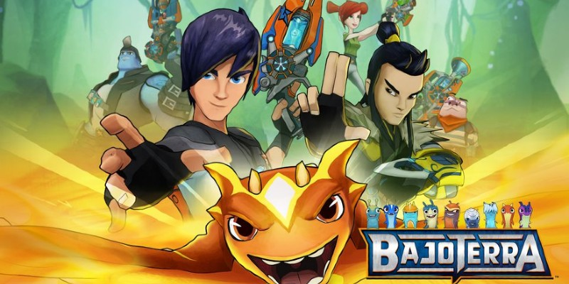
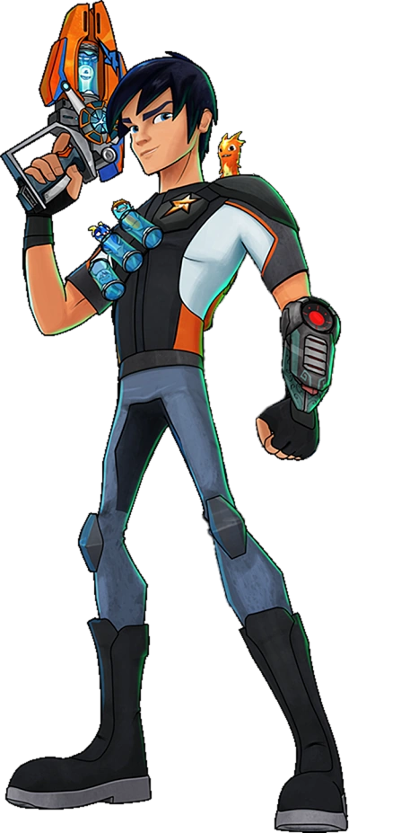
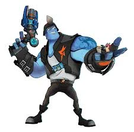
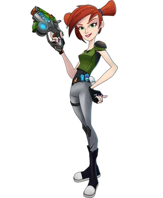

Descripción de la Serie
Bajoterra es una serie animada que sigue las aventuras de Eli Shane, un joven que aspira a convertirse en el mejor héroe de las profundidades en las cavernas como toda su familia pasada, Es un mundo subterráneo donde las babosas juegan un papel crucial en las batallas y la estabilidad de esta misma.

Personajes Principales

Eli Shane: El protagonista, un que lucha para mantener la paz en Bajoterra después que su padre desapareciera luchando por el bien.

Burpy: La babosa más leal de Eli una tipo Infierno.

Kord Zane: El mecánico del equipo, confió en Eli desde el momento que lo conocio.

Trixie Sting: La estratega del grupo, siempre preparada para poner en marcha a la banda.